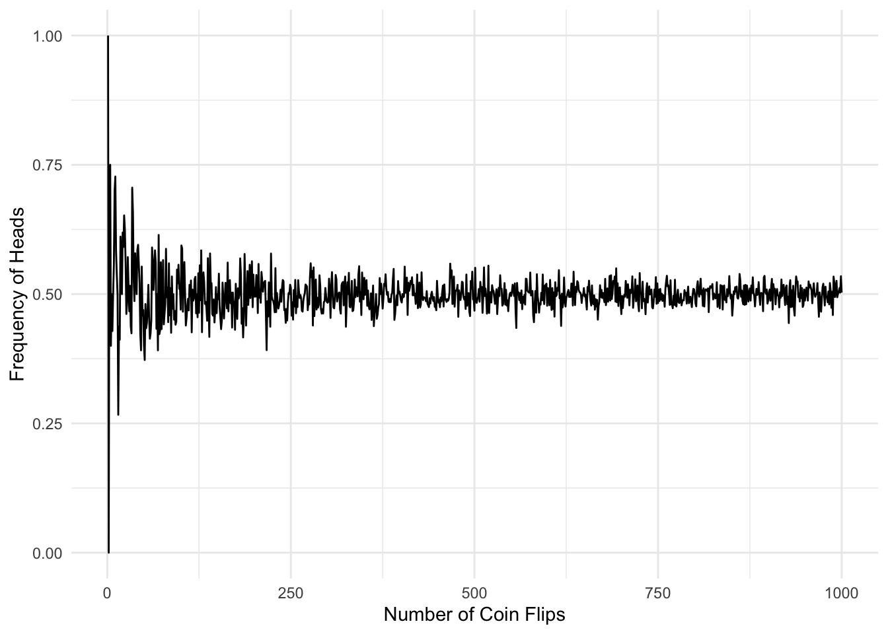

Probably Useful - Quick comments about probability
Probability
Many ecologists learn some basic statistics in undergrad, with maybe some advanced training in grad school. However, we mostly learn through other papers or patchwork approaches while trying to analyze our own data. As a consequence, there isn’t always a formal introduction to basic concepts of probability. However it is important for us consider some of the fundamental ideas underneath this concept of “probability” which we are using when we conduct our analyses.
Similar to the words “hypothesis” and “theory”, words like “probability”, “chance”, “odds” are common to use in english but the connotation of these words is not often considered. When talking about statistics, the term “probability” is quite a loaded word and may be interpretted in a number of ways. Bulmer (1965)’s first chapter offers a nice discussion on the theoretical implications of two concepts of probability, which he defines as “statistical probability” and “inductive probability”. Similarly, Kruschke (p73-77) discusses these two terms as “outside the head” and “inside the head” respectively (possibly a more approachable read given modern writing). Hopefully not to complicate it further, I’m going to use the terms “frequency” and “credibility” to breifly discuss these two different probability concepts.
Frequency Definition
This is the more formal definition of probability which is likely introduced in a class on probability. It is the idea that probability is a measure of a long-run relative frequency of some specified event. The classic example is that the probability of getting heads on a fair coin flip is 0.5, which can be demonstrated by flipping a coin some large number of times and calculating the proportion of head. Authors will often refer to this as an empirical approach to probability as it can be demonstrated (hence Kruschke’s “outside the head” term as it can occur in the real world).
We can simulate such a probability to see as our sample size increases, the measured frequence of heads converges to the fixed true probability value:
set.seed(1031)library(ggplot2)true_prob =0.5num_trials =seq(1,1000,1)coin_result =sapply(num_trials, function(x) rbinom(1, x, true_prob)) / num_trialsggplot() +geom_line(aes(x = num_trials, y = coin_result)) +labs(x ='Number of Coin Flips', y ='Frequency of Heads') +theme_minimal()

Clearly, increasing the number of trials allows us to converge towards the true probability.
Credibility Definition
Alternative to the frequency interpretation of probability, we have a more colloquial use of probability. This is like “what’s the probability Texas makes it to the SEC championship game” or “What’s the probability the ghosts of all the fish we’ve caught will haunt us forever?”
This use of the term probability is more referring to the credibility of some event or the strength of belief in a statement. This terminology, while more intuitive from a thinking standpoint, is less straightforward to define in a mathematical concept. Thus, many approaches of orthodox statistics try to hammer us away from using this terminology of probability.
To quote the end of Bulmer’s 1965 introduction to Principles of statistics:
Such a psychological scale varying from one person to another is of little use in scientific discussion in which the scientist mush persuade others to believe what he himself believes.
It has been reluctantly concluded by most statisticians that inductive probability cannot in general be measured and, therefore, cannot be used in the mathematical theory of statistics… …there seems no reason why rational degrees of belief should be measurable any more than, say, degrees of beauty… it does not seem possible to construct a numerical scale of such (inductive) probabilities.
This is quite the argument against the credibility definition of probability. However, the basic idea of Bayesian analysis does exactly what Bulmer describes as impossible: assign mathematical measurements to characterize levels of belief (or credibility) to some event or value. Both Gelman (2013) and Kruschke (2015) offer criticisms with the frequency definition - and how it is not as objective as the frequentists claim. I don’t go into those arguments here but to quote Gelman Chapter 1:
In Bayesian statistics, probability is used as the fundamental measure or yardstick of uncertainty. Within this paradigm, it is equally legitimate to discuss the probability of ‘rain tomorrow’ or of a Brazilian victory in the soccer Wold Cups as it is to discuss the probability that a coin toss will land heads…
… Bayesian methods enable statements to be made about the partial knowledge available (based on data) concerning some situation or ‘state of nature’ (unobservable or as yet unobserved) in a systematic way, using probability as the yardstick. The guiding principle is that the state of knowledge about anything unknown is described by a probability distribution.
Notation & Definitions:
Probability distributions & random variables
When describing a model, we will use notation to define which distributions we are using to model our parameters and data-generating processes. So it is important to be familiar with these things. A probability distribution, to quote Kruschke, is “simply a list of all possible outcomes and their corresponding probabilities”. Effectively, it is a function used to describe the distribution of probabilities around some event. There are several probability density (or mass for discrete data) functions which can be used to describe distributions. For example, the binomial distribution would be used to define the coin-toss example. Alternatively, a normal distribution may be used to describe the weight of werewolves from some population.
A variable is said to be a random variable if it is value is generated by a stochastic process (sampled by a probability distribution). For example, if werewolf weight, \(W\), can be described by a normal distribution with mean, \(\mu\), and variance, \(\sigma^2\), we can write \(W \sim \mathcal{N}(\mu, \sigma^2)\). Probabilitistic statements can then be written as \(Pr(W = w) = \frac{1}{\sigma\sqrt{2\pi}}exp(-\frac{1}{2}(\frac{w-\mu}{\sigma})^2)\) to say “the probability any given werewolf weighs \(w\) is equal to the probability density function (PDF) for a normal distribution evaluated at \(w\)”.
In bayesian analyses we end up writing a lot of distributions and notation. Since it is not always easy to write out the distributions specified, or because we may not be referring to a defined distribution, we need a short hand for specifying the PDF. Some authors (Gelman, Kruschke) use the notation \(p(\cdot)\). However, this becomes cumbersome when writing out more detailed models or formulations. In most cases, ecologists may not encounter this as a huge issue (I’ve seen papers with \(\theta \sim Dist(\theta)\) which is even messier). However, it is fairly common in Bayesian literature to use bracket notation, \([\cdot]\) for a PDF.
So, in our example: \[
\begin{split}
W \sim \mathcal{N}(\mu, \sigma^2)
\equiv
W \sim p(W)
\equiv
W \sim [W]
\end{split}
\]
Note in this example, I used a normal distribution but \([\cdot]\) can be any distribution in practice.
Conditional Probability
Full probability theory and introduction is way outside the scope of what’s intended here. But it is important to define the notation of conditional probability. We use the notation \([a | b]\) to say the probability of \(a\) conditional on \(b\). In other words if we know \(b\), what is the probability of \(a\)?
The formula of conditional probability can be defined as:
\[
[a|b] = \frac{[a, b]}{[b]}
\]
The joint distribution of \([a,b]\) is the product probability of both \(a\) and \(b\) conditioned on \(a\):
\[
[a,b] = [a][b|a]
\]
see Hooten & Hefley chapter 1 for all details
Bayes Rule:
Now that we have some basics, we can define the Bayes rule which underlies this whole idea:
Using the conditional distribution \([a|b]\), we can substitute in the definition of \([a,b]\)\[
\begin{align}
[a|b] &= \frac{[a, b]}{[b]}\\
\\
&= \frac{[a][b|a]}{[b]}
\end{align}
\]
This is the fundamental concept behind Bayesian analysis which I’ll discuss below. For a fun bit of history, Bayes rule was named after Reverend Bayes but Bayes did not publish his own work and left the implications for it somewhat unfinished. It was Richard Price who discovered his work and published it in 1763. However, it is worth noting that really it was Laplace who independently developed Bayes’s rule and published it in 1774 with more direct applications. Despite the early definitions of Bayes rule, which as you’ll see allows its application to mathematically formulate inductive probabilities, it was not widely adopted. Most of statistics throughout the 20th century was descended from Fisher’s work on frequentist analyses - which places Bulmer’s comments into much clearer context. As you’ll see, Bayesian analysis, while not exclusively, typically typically rely stochastic simulations which require strong computational resources. So it hasn’t been until the past couple of decades Bayesian analyses are approachable for modern cases. As computation resources increase, the power of bayes only grows.
Applications to analyses
Now with a basic grasp of the fundamental pieces behind probability - let’s discuss briefly how this all works its way into statistical inference.
Frequentist statistics
If you’ve run any analyses on your data there is a good chance you’ve used what are referred to as frequentist statistics. These are essentially anything which rely on a p-value to interpret results. These analyses all rely on the long-run frequency interpretation of probability
Explaining all of frequentist statistics is a long winded In short the idea regarding frequentist analysis is that we are interested in some population level parameter which has a true, fixed value. We then collect a sample from this population and using our sample statistics, we can use some inferential statistical analyses (or tests) to try and make inferences about that parameter. In past classes, I used this diagram to describe this process:
When statistically testing our samples for population level inference, we are saying, “if I collected this sample many, many repeated times what would my sample look like?”. Thus most tests will report both a confidence interval and p-value. First, let’s talk confidence intervals. Usually a stats course might teach students this means, “I am 95% confident that the true population-level parameter is within this range.” Although, more technically the confidence interval could be thought in a frequentist context of “If the we sampled from the population distribution many, many times 95% of the time, our sample would capture the true parameter value”. I always found this concept very well characterized by an app made by the professor of my undergraduate probability course linked here
A p-value is an extension of the confidence interval in some ways. What most students will learn, and use, is that a small p-value means that your findings are “statistically significant”. But what does that really mean? Generally, a p-value is a result from some test which in technical terms is the probability of a type-i error, or rejecting the idea that your parameter of interest is different from some other value (usually 0). In more approachable language - a small p-value suggests that your parameter is statistically significantly different than 0 (or some other value). Thinking in frequentist ideas, it is the probability you would draw that sample of data, if the true population parameter is 0. However it is in general sticky to explain and why many students (and scientists) do not correctly discuss their results.
Often times, I think ecologists are not actually interested in the results of the frequentist statistical analyses which they are running. However, this is often all which is learned and there is the never-ending hunt for a “statistically significant” result which unfortunately drives us in the wrong direction. One thing, which is well explained in Kruschke’s chapter on NHST, is that the p-value really depends on sample size in most cases and can bias our conclusions (See figure 11.1).
I think that these analyses do have their place but are often misunderstood and misused. These short sentences are far from a full discussion on the advantages and challenges of frequentist analyses but see some of these resources:
Again this was far from a complete introduction to frequentist stats, but here’s an undergraduate-level reference sheet I wrote a while ago: link
Bayesian analysis:
So what we’ve all waited for - Bayesian analysis. The fundamental idea of Bayesian analysis is that everything is treated as a random variable, meaning it is drawn from some distribution. So if we are interested in a population parameter - we don’t assume it has some true fixed value, but rather we are interested in describing the distribution of that parameter. We can use bayes rule to describe parameter distribution using both prior knowledge of that parameter, \(\theta\), and observed data, \(y\).
This is better described to returning our Bayes rule,
\([\theta|y]\) - the probability distribution of a parameter given data. This is called the posterior distribution
\([y| \theta]\) - the probability of that data given the parameter value. This is often called the likelihood of the data or in practice we will define some model, called a “data model” where we define some process which generates data under the parameters of interest.
\([\theta]\) - the probability of that parameter. This is referred to as the prior distribution. Here, we can incorporate prior knowledge or assumptions about the parameter
\([y]\) - the probability of the data under the model. Also referred to as evidence or marginal likelihood
The last piece here is the most complicated as it can be tricky to calculate as it is the probability of \(y\) under all possible values of \(\theta\). This means:
\[
[y] = \int [y|\theta][\theta]d\theta
\]
However, by integrating over all possible values of \(\theta\), \([y]\) will be calculated as a constant. As such, it only serves to scale the numerator in bayes rule and is not actually necessary to describe the posterior distribution. So we can update our formula to say:
\[
[\theta | y] \propto [y | \theta][\theta]
\]
Thus, our posterior distribution is proportional to the data model (likelihood) and the prior distribution. In practice, this means we can take our prior belief (\([\theta]\)) and update it based on data. To quote Kruschke’s opening lines of Chapter 2: “Bayesian inference is reallocation of credibility across possibilities”. We can specify what we thought about something, then based on new information update our belief. Not only does this allow for the use of the inductive terminology of probability, it much more closely matches our intuitive way to discuss science. What do we think about a hypothesis before a study and how does this update when we finish the study. For a spooky example: Let’s say you firmly believe your house is haunted, then we bust out all the tools to look for ghosts and find absolutely nothing, your updated belief in the haunted house likely declined a bit.
In Bayesian data analyses we typically don’t concern ourselves with Null-hypothesis significance testing (p-values). Instead, we often will report credible intervals - a range of values which best captures the bulk of the posterior distribution. These can be 95% quantiles, however more often a high-density interval is used as it can capture non-uniform distributions.
All this will hopefully become clear in our examples upcoming: